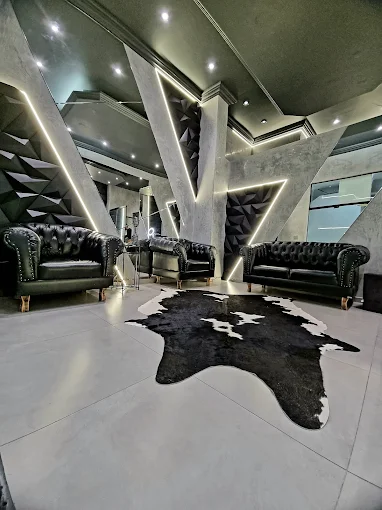
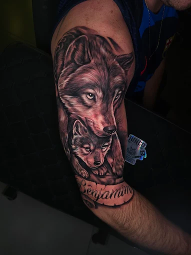
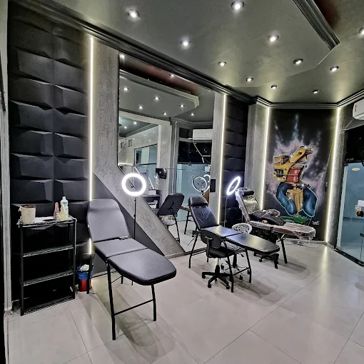
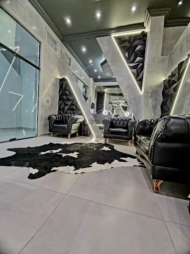
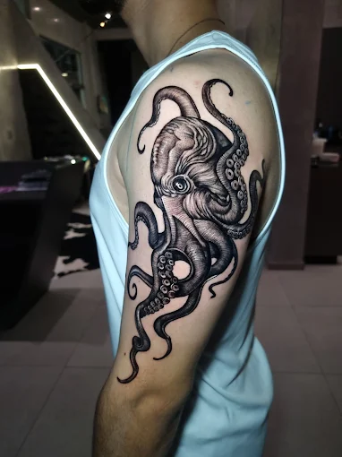
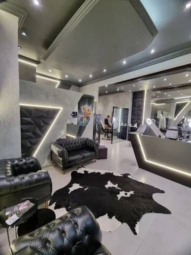
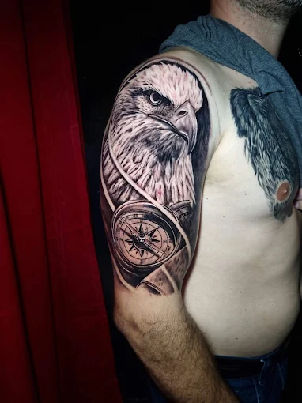

Fine Line · Realismo · Cobertura · Lettering
Consultoria → Design Exclusivo → Execução Perfeita
Especializado em realismo preto e cinza, cobertura e fine line. Veja alguns dos trabalhos que já realizei.
Padrão de protocolo clínico, zero compromissos.
Aberta na sua frente, cada sessão uma nova
Autoclave profissional, certificado
Protocolo a cada cliente
Uma pessoa por vez, sem pressa
Eu sei que tatuar dá frio na barriga: será que vai ficar bom, dói, vou me arrepender? Desde 2014 eu faço esse medo virar orgulho — e são mais de 600 avaliações 5 estrelas que confirmam isso.
Sou especializado em realismo preto e cinza: um estilo que não perdoa erro. Por isso trabalho de um jeito só: sem pressa, um cliente por vez, com material descartável aberto na sua frente. Você não sai daqui com uma tatuagem qualquer. Sai com a sua, pra vida toda.
Aquela tatuagem que te incomoda pode virar a que você mais ama.
Pode ser foto, descrição, desenho — o que você tiver em mente.
Agendamos conversando. Um sinal que abate no valor final reserva sua data.
No dia marcado, você sai com a sua tatuagem. Sem pressa.
Para reservar a data pedimos um sinal que abate no valor final.
O valor depende do tamanho, complexidade e local da tatuagem. Manda sua referência que faço um orçamento certinho. Geralmente realismo sai a partir de R$300, mas pode variar muito pra mais.
Dói sim, mas passa rápido. Depende muito da sua tolerância, do local e do tamanho. Quem já fez comigo fala que a conversa e o ambiente ajudam a passar despercebido.
Simples: deixar secar, não mexer, lavar com água morna e sabão neutro 2-3x ao dia nos primeiros dias. Usar pomada específica. Evitar exposição ao sol, piscina e academia por 15 dias. Dou um manual impresso no final.
Sim. Um sinal pequeno (combinamos no orçamento) garante sua data na agenda. Esse valor abate do preço final da tatuagem.
Claro! Quanto melhor a referência, melhor a tatuagem. Pode ser foto, print, desenho — trago como está ou adapto para ficar perfeito no seu corpo.
Sim. Se algo sair fora do planejado, agendamos um retoque sem custo. A tatuagem é meu trabalho — sai certo.
Gabriel está com agenda quase cheia. Se quer uma tatuagem de qualidade, é agora.
👇 Agende agora • Resposta em até 2 horas • Sinal garante sua data
Av. Nereu Ramos, 4142, Sala 9
Meia Praia — Itapema/SC
Horário
Seg–Sex: 9h–18h
Sáb: 9h–13h